1. Introduction#
Course Website
Readings#
Gupta, R.S., 2017. Hydrology and Hydraulic Systems, pp 39-46
Ojha, Chandra & Berndtsson, R. & Bhunya, P.K.. (2008). Engineering Hydrology. Chapter 1 The linked copy is excerpted from (https://www.researchgate.net/publication/264895381_Engineering_hydrology)
Chow, V.T., Maidment, D.R., Mays, L.W., 1988, Applied Hydrology: New York, McGraw-Hill. pp. 1-12
Brutsaert, W. 2005. Hydrology : An Introduction (8th printing), Cambridge University Press. NewYork.
Wisler, C.O, and Brater, E.F. 1949. “Hydrology” John Wiley and Sons, New York pp. 1-14
Wisler, C.O, and Brater, E.F. 1949. “Hydrology” John Wiley and Sons, New York pp. 198-272
Videos#
none
Spreadsheets#
Course Resources#
%%html
<style>table {margin-left: 0 !important;}</style>
Essential Knowledge, Skills, and Abilities for Practical Engineering Hydrology
The list below represents the most important (highest probability in Google’s topical seacrh database) topics in the currect practice of Hydrology and Hydraulics:
Hydrological Processes: Understanding of various hydrological processes such as precipitation, evaporation, infiltration, runoff, and groundwater flow.
Hydrological Models: Knowledge of hydrological modeling techniques including statistical methods, deterministic models, and numerical simulations.
Watershed Dynamics: Understanding of watershed characteristics, behavior, and dynamics.
Hydraulic Structures: Knowledge of design and function of hydraulic structures such as dams, weirs, culverts, channels, and stormwater management systems.
Hydrological Data Collection: Familiarity with methods for collecting and analyzing hydrological data, including gauge stations, streamflow measurements, and rainfall data.
GIS and Remote Sensing: Proficiency in Geographic Information Systems (GIS) and remote sensing techniques for spatial analysis and mapping of hydrological features.
Regulatory Requirements: Understanding of relevant regulations and guidelines governing water resources management and environmental protection.
Climate Change Impacts: Awareness of how climate change can affect hydrological processes and water resource management strategies.
Software Proficiency: Familiarity with hydrological modeling software such as HEC-HMS, HEC-RAS, SWMM, and MODFLOW.
Erosion and Sediment Transport: Knowledge of erosion processes and sediment transport mechanisms in rivers and streams.
Importance of Hydrology in Engineering#
Hydrology is the study of water(s) of the earth. Environmental and Civil Engineers need an understanding of the hydrological cycle concept and the ability to answer engineering questions about hydrologic circumstances. Such broad questions include:
Where does water come from?
What are surface and groundwater compartments?
How does water cycle through the system?
How much time does water spend in a compartment?
In addition they need to be able to determine the quality (purity) of the water in anticipation of its use, to determine the assimilative capacity of a compartment, and to determine the amount of water available for both supply and drainage purposes.
Hydrologic quantification concepts are important in:
Water Supply:
How much is available?
Where is it located? Surface or subsurface (AKA Groundwater)
What is the quality of the water?
What processes will be needed to purify the water to a desired level?
Waste disposal:
Where will the water be discharged? Surface or subsurface
What is the discharge quality?
Can the receiving compartment assimilate the waste materials?
What is needed to purify the waste to a desired level so it can be discharged?
Drainage:
Low flows: Habitat preservation. Waste water discharge capacity. Water supply.
“Routine” flows. Flows associated with precipitation and other forces that are relatively common in frequency and magnitude; these are flows we expect to live with. Effect on infrastructure, esp. transportation, but also manufacturing. Management of pollutants carried from facilities.
“Flood” flows. Flows associated with precipitation and other forces that are uncommon in frequency and/or magnitude; these flows that are expected to interrupt daily activities – engineering goals are to preserve life and protect large-value properties.
Flooding is an environmental hazard – floodwaters are usually polluted and may present a significant source of disease. Flooding is lethal – lives are lost, often from plain ignorance but not always. Civil infrastructure (bridges, highways, airports, water and wastewater treatment plants, dams, hospitals, government buildings, etc.) are supposed to survive flooding and be back in service very quickly.
Engineering hydrology uses sets of “tools” to help answer these kinds of questions (or at least prepare for the extreme events).
Water Uses#
Water has multiple uses and each of these uses impacts the water differently. Most of the major uses are listed below.
Drinking water is considered the highest beneficial use of water in the USA. Oddly enough, we each only NEED about a 5-liters per day (temperate zone) for survival, perhaps 15-liters per day for survival, cooking, and hygiene (not counting toilets) (Alloway, D., 200#). Thus Houston’s 500MGD treatment capacity is enough to support the basic needs of well over 100 million people, but much of our drinking water goes to other uses. This odd situation is based on public health decisions made over a century ago at the dawn of the sanitation theory of disease. Similar situations exist in the rest of the developed world, although Europe and Asia are further along in separate potable and non-potable systems that in the USA.
Agricultural use is probably the second highest beneficial use in the USA as it is directly related to the production of food and raw materials. The quality requirement of the water is much different than for human consumption, but generally the mineralogical quality (dissolved monovalent ions) is crucial.
Industrial water use ranges from product water (Ozarka is an industrial product, regulated by the FDA), to water in heat exchangers. The quality can be variable depending on the use. For example, water used in semi-conductor manufacture is probably the closest to chemically pure water found outside a laboratory, while water in closed-loop heat exchange would poison tube worms (a creature found in undersea geothermal vents that derive their energy from conversion of reduced sulfur species – i.e. indestructible!).
Power generation (hydropower and geothermal) uses enormous volumes of water to spin turbines to generate electricity. If you ever get the chance to visit Hoover Dam (Las Vegas) or the Grand Coulee Dam (Washington), you can see classic examples of a pure hydropower (Hoover), and a pump-storage/hydropower (Grand Coulee) system.
The figures below depict some of the features of the Grand Coulee Dam, which is currently the largest producer of hydropower in the United States, and the third largest in the world. (The other two are in China and Argentina, respectively).

The figure below is the generator gallery - there are three such galleries; combined they are quite large (easily 1/5 mile across).
The figure below is a drawing of one such generator and ancillary plumbing
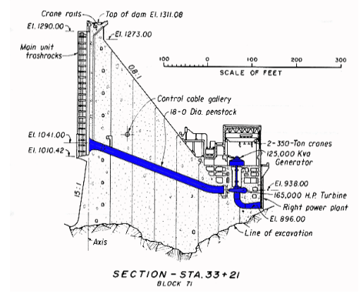
If you look at the drawing, the power tunnel (penstock) is 18 feet in diameter. A tractor-trailer truck could fit in an 18-foot tunnel; and the water velocities in these tunnels are well above 10 feet per second, so the volume passing through the tunnels when producing electricity are huge.
The figure below is a drawing of a generator-pump unit, that is part of the pump storage system to the Southwest of the dam. In this drawing the discharge tunnel (which doubles as a penstock, when the flow is reversed) is 12 feet in diameter.
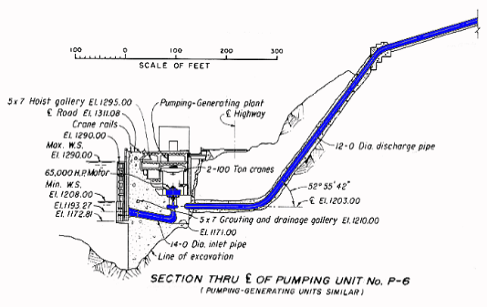
Navigation also uses and moves large amounts of water. In most cases navigation, power generation, and recreation are mutually compatible. Probably the most famous navigation system is the Panama Canal. Close to home is the inland waterway system operated by the Tennessee Valley Authority that essentially connects Knoxville Tennessee to the ocean (via Ohio River and the Intra-coastal Waterway). A schematic is shown below.
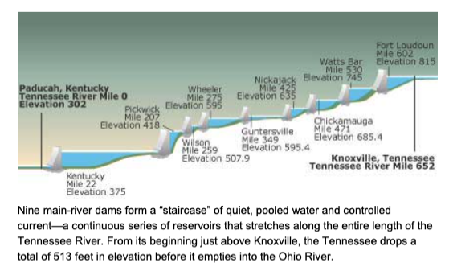
Recreational use includes both sport fishing, and contact recreation (swimming, etc.). In this use bacteriological quality is important as ingestion of water and aerosols occurs in these uses. The principal public health issue is to prevent water-borne disease. An example of disease related to water quality (and thus hydrology) are occassional outbreaks of vibrio vulnificus in the coastal waters of Texas.
Waste Assimilation is an important use that certainly puts as much water back into the hydrosphere as is removed for drinking, agricultural, and industrial uses. Essentially all wastewater either treated or not is returned to the hydrosphere, and this use of the receiving stream greatly impacts its quality, and thus is subsequent use. The purpose of treatment is to return water at a quality that natural systems can treat and/or assimilate. Historically the measure of quality has focused on oxygen content, BOD, TSS, and bacteriological indicators. If the wastewater is sufficiently low in the last three parameters and high enough in the first, then the receiving stream can complete the “cleansing” process. Industrial chemicals complicate the issue as do dissolved metals which are toxic to most species that are part of the natural treatment process. Storm water is considered a form of wastewater and is beginning to receive more and more attention both in its quantity (wasted water resource; destructive force) and quality (degrader of natural systems – an arguable point of view, but regulated nevertheless). (http://www.epa.gov/ebtpages/watewastewater.html)
Habitat is the designation of water use for maintaining species considered valuable for economic and/or aesthetic reasons. For example, waterfoul harvesting in the USA has a direct economic impact in the 2- billion dollar a year range, and thus maintenance of viable habitat for ducks and geese is economically important, and these habitats need specific volumes of water a particular times. Unfortunately, past practices has created situations where this water use is in direct competition with other economically valuable uses.
Water “Problems”#
Drainage and Flooding#
Drainage and flooding are relatively obvious problems. Drainage is concerned with removing water from areas to prevent nuisance inundation (i.e. highways) so that commerce can continue. In the early days of aviation, “all-weather” aircraft were a big deal, because commerce could continue regardless of environmental conditions; in a similar vein we have come to expect our daily lives to be only mildly impacted by the weather.
Flooding in the usual context is catastrophic flooding that causes MEASURABLE economic damage, and several hours of loss of service of the public and private infrastructure. Both areas are the domain of civil and environmental engineers as they are expected to be able to predict magnitude and locations, as well as design ways to prevent or reduce damage (an essentially impossible duty, but we can help people make good decisions). In for example Houston, residents experience four types of flooding: hurricane tidal surge, bayou flooding, secondary drainage system flooding (streets and storm sewers), and nuisance flooding (which is my designation of a subset of the last category, main economic loss is mobility).
Various engineering strategies that have been proposed or implemented are: coastal levee protection system, with huge pumps to deal with waters that breach the levee (like New Orleans); deep tunnel/underground storage (includes letting the sanitary system operate surcharged); pumped canal systems; watershed interconnect (until recently this option was forbidden, it would technically be an inter-basin transfer of waters of the USA); reservoirs (Addicks, Barker, and a reservoir proposed on Sims bayou); flood thrusters (axial flow pumps submerged in the bayous); flood corridors (set aside land adjacent to known flood paths and prohibit development; this is a FEMA preferred approach); salt dome storage; residential storage (require all property owners to detain 2-inches of water for 24 hours during any event).
Obvious from this list of concepts, flooding is a huge economic issue, with huge mitigation costs that only reduce loss of service time. The photo gallery excerpt below illustrates the kind of economics involved. To be fair to the leaders at the time, the water depths were not preventable, but in hindsight, the community may have been to reduce the damages considerable by better decisions.
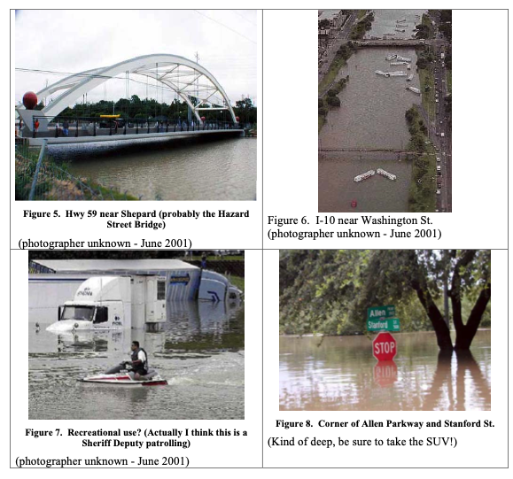
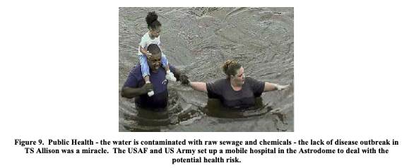
Low quality for specific use.#
Groundwater historically has been high quality water in terms of potability, and relatively abundant where surface sources are non-existent. Surface activities have introduced pollutants (organic chemicals) that render the water useless without treatment and wellhead treatment is considered problematic. The general strategy in the last three decades has been to eliminate sources and attempt to slowly restore aquifers to the highest beneficial use. In some cases this approach has led to the pumping, treatment, and re-injection of groundwater without letting it pass through a beneficial use (i.e., it doesn’t go through any kidneys)
Erosion#
The destructive power of moving water is greatly underestimated by most people, including civil engineers. Erosion is a problem because of loss of expensive infrastructure as well as loss of productive agricultural land. One problem that has emerged in the last century is that our ability to control water using impoundments (dams) has made erosion problems worse in many cases. Locally in Texas we have many water crossings (bridges) in danger of failure or restricted service after relatively common discharge events. The figures below illustrate the erosive force of water.
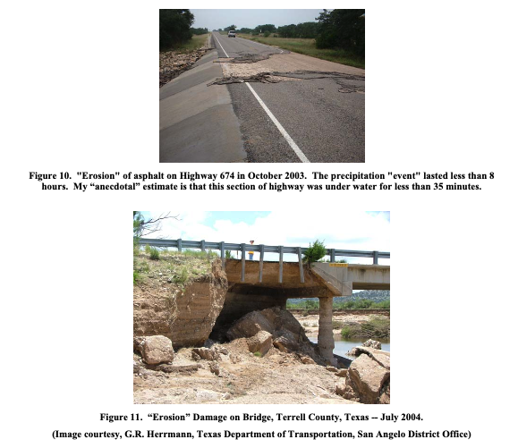
Sedimentation#
Sedimentation causes loss of capacity in regulating structures and can block intakes for water supply and hydropower. Dredging can disturb contaminated sediments that have been overlain with clean sediment (a desirable situation and encouraged in the EPA’s sediment management strategy). Sedimentation is the opposite of erosion where solids are mobilized, but often are related. That is materials eroded in one location are deposited elsewhere. In most such cases both processes are undesirable from an infrastructure standpoint.

Regulatory Agencies and Programs#
Water is regulated by various agencies. Water is both property (ownership is defined), and well as a shared resource (quality and uses are governed). The annotated list below is a sampling of some of the agencies involved in different aspects of water, and thus directly involved in engineering hydrology.
Natural Resources and Conservation Service (NRCS). Provides financing and technical assistance for the conservation of land (soil); emergency watershed preservation assistance (natural disaster relief); and administers the small watershed program (funding and technical support) to preserve and or enhance the economic and environmental viability of watersheds in the Unites States. Much of the hydrologic methods for surface water have been developed by the NRCS and the U.S. Army Corps of Engineers. http://www.nrcs.usda.gov
U.S. Army Corps of Engineers. The Corps builds, maintains, and operates dams throughout the United States which normally help control flooding. They are also a key player in dam safety. They issue permits for drainage structures and development in the regulatory floodplain that impacts waters of the United States.
U.S. Geological Survey. The USGS maintains the official national network of stream gages, which show streamflow conditions in most of the important rivers and streams in the United States. The agency also does a range of research relevant to all aspects of hydrology. Real-time Streamflow Data: http://water.usgs.gov/realtime.html
National Oceanic and Atmospheric Administration. NOAA’s involvement with flood issues lies primarily in monitoring, understanding, and forecasting weather. NOAA also has lots of nifty aerial and satellite photos of flood conditions. National Weather Service is part of NOAA. NWS general and weather info page: http://www.nws.noaa.gov/. Hurricane Flooding: A Deadly Inland Danger (backgrounder): http://www.nws.noaa.gov/oh/hurricane/inland_flooding.html. NOAA Flooding Page: http://www.noaa.gov/floods.html. Includes link to NOAA’s Hydrologic Information Center, which monitors not only river/streamflow conditions, but other conditions like soil moisture, snow, and longer-term meteorological outlooks.
U.S. Environmental Protection Agency. Regulates the quality of water in the hydrosphere within the political boundaries of the United States (including territories). Issues permits directly or by designee for pollutant discharges into waters of the United States. Regulates drinking water produced by publicly owned systems and certain private systems. (Note: The FDA is the regulatory authority for bottled drinking water, not the EPA, but the source of water for bottled water is often municipal water supplies that are EPA regulated). http://www.epa.gov
Texas Council on Environmental Quality. State designee for federal water quality programs and NPDES programs. Issues permits for water system operators, conducts enforcement and clean-up activities, issues water rights (property) decisions. http://www.tceq.state.tx.us
Federal Emergency Management Agency (FEMA). FEMA is involved in almost all facets of the flooding story. This independent federal agency administers flood disaster aid and also administers the National Flood Insurance Program. The “working end” of FEMA, especially during a disaster, is in its regional offices and local field offices. http://www.fema.gov/nfip/.
National Dam Safety Program. This FEMA-based program is actually the nexus of several federal and state interagency dam-safety programs. FEMA convenes the National Dam Safety Review Board and Interagency Committee on Dam Safety. See http://www.fema.gov/mit/damsafe/.
Map Service Center (flood plain maps): http://msc.fema.gov/MSC/.
National Hurricane Center/Tropical Prediction Center. For hurricane-related flooding. Everything from real-time updates to forecasts and historical background: http://www.nhc.noaa.gov/. Listing of state agencies: http://www.floods.org/states.htm.
National Association of Flood and Stormwater Management Agencies. Director: Susan Gilson (director): (202) 218-4122, http://www.nafsma.org/.
Floodplain Management Association. Publishes the peer-reviewed Journal of Floodplain Management. http://floodplain.org/index.htm.
Association of State Dam Safety Officials. http://www.damsafety.org/.
Food and Drug Administration. Regulated bottled drinking water, and certain aspects of water used in the make up of medicines, food, and food supplements. http://www.fda.gov
U.S. Public Health Service, Centers for Disease Control. Conducts research and provides assistance to prevent spread of waterborne disease. Publishes components of the MMWR (Mortality and morbidity weekly report)which includes several reportable, waterborne diseases. http://www.cdc.gov
U.S. Fish and Wildlife Service. Issues permits for certain activities in sensitive habitats. Funds habitat restoration and creation, such as in-stream restoration (hydrology is important).
Non Government Organizations (NGOs)#
Many NGOs are involved directly in hydrology. These organizations have miniscule budgets as compared to funded agencies, but have huge reserves of volunteer talent and staying power. In many instances the goals of the NGOs and agencies and engineers are compatible and they work together, at other times the relationship is adversarial.
American Red Cross. Provides disaster relief services for all kinds of disasters, including hydrologic disasters. The link is to their grifting page, but from there can learn about the organization. Flood Readiness Booklet
Nature Conservancy The link is to their grifting page.
Sierra Club This link bypasses the grifting page.
1.1 The Hydrologic Cycle#
Precipitation, evaporation, infiltration, runoff, and groundwater flow
Global and regional water balance
Hydrologic Cycle#
The water, or hydrologic, cycle describes the journey of water as water molecules make their way from the Earth’s surface to the atmosphere and back again, in some cases to below the surface. This gigantic system, powered by energy from the Sun, is a continuous exchange of moisture between the oceans, the atmosphere, and the land. A typical diagram depicting the hydrologic cycle is shown below.
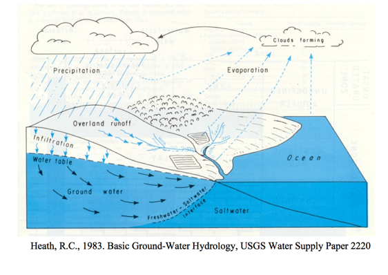
The driving force for the cycle is solar energy that provides the energy to vaporize liquid water that then rises into clouds, moves onshore, and rains (or snow, sleet, \(\dots\). and other forms of precipitation) A portion of the rain becomes runoff, another portion returns to the atmosphere as evaporation, another portion infiltrates into the ground and becomes groundwater.
A more detailed accounting of the precipitation is as follows:
A portion known as interception is retained on buildings, vegetation, and other surfaces that eventually evaporates - the remaining quantity is called effective precipitation
Note
Excess precipitation is a similar concept. When discussing rainfall-runoff processes using some model (i.e. unit hydrograph methods), the quantity that becomes runoff is called excess precipitation. The terms are frequently used interchangeably.
Some of the effective precipitation also evaporates directly.
Another portion of effective precipitation infiltrates into the ground - a portion of infiltrated water returns to the atmosphere via transpiration, the remainder either percolates deeper into the ground or is incorporated in the vegetative biomass.
The water that percolates deeper into the ground becomes recharge to the groundwater system, and may appear at some point as baseflow in streams.
If the precipitation exceeds the combined evaporation and infiltration puddles form in small depressions on the land surface - this is called depression storage.
After the depressions are filled they join and a continuous film of water can begin to flow over the surface to a stream channel. This portion that can flow is called the excess precipitation (see the note above), and the flow is called the direct runoff.
Runoff occurs when the film of water begins to move - water in this film is said to be in detention storage, and evaporation occurs from this compartment too. When precipitation ceases, the water in detention storage eventually joins the stream channel.
The destination of all streams is open bodies of water such as lakes, seas, and oceans which are subject to substantial evaporation.
The evaporation and tanspiration from all these sources combine and carry moisture back into the atmosphere which condenses and repeats the cycle.
1.2 Hydrologic Balance(s)#
Hydrologic balance is simply an expression of the conservation of mass in hydrologic terms for a hydrologic system.
It is the fundamental tool in hydrology to describe amounts of water in storage in different compartments at different scales.
Importance in Engineering#
Hydrology is the study of the occurrence, circulation, storage, and distribution of surface and groundwater on the Earth. Engineering hydrology is the quantification of amounts of water at various locations (spatially) as a function of time (temporally) for surface water applications; hence the importance of the hydrologic balance equation(s).
Watershed (catchments)#
Watersheds are:
Topographic area that collects and discharges surface streamflow through one outlet or mouth (pour point)
The area on the surface of the Earth that drains to a specific location
In groundwater a similar concept is called a groundwater basin – only the boundaries can move depending on relative rates of recharge and discharge
The topographic definition ignores that there could be subsurface sewer systems that can cross topographic boundaries; a big deal in urban areas.
The watershed is a fundamental component in engineering hydrology - its delineation (where its boundaries are relative to its outlet(s)) and mesurement of area, slopes, flow paths, runoff generation potential are a big part of hydrologic engineering.
Hydrologic systems#
A hydrologic system is just a collection of parts that interact.
A hydrologic system is simply the collection of connected components that form the hydrologic cycle
These components can be grouped into subsystems, treated separately, and the results combined according to interactions between the subsystems (CMM pg 5)
A watershed is one such part (or even a subsystem)
Like in fluid mechanics, the system has boundaries (the control volume) and fluxes into/out of the boundaries.
The entire planet is usually considered a closed system (hydrologically) and only the energy fluxes cross the boundary.
At more practical scales (parking lot) the mass fluxes matter a lot.
Water Budget(s)#
The water budget, or hydrologic balance is simply the expression of the conservation of mass in hydrologic terms for a hydrologic system.
Generally it is expressed as a rate (or volume) balance.
The hydrologic equation is the fundamental tool in hydrology to describe amounts of water in storage in different compartments at different scales.
The equation expressed in “words” is
Rate of inflow - Rate of outflow = Rate of change of storage + Rate of internal mass generation.
Symbolically it is exrepssed as:
where
\(I\) is inflow volume, \(O\) is outflow volume, \(S\) is storage volume (i.e. within a watershed), and \(G\) is generated volume. \(G\) is generally zero, but is included to be consistent with the balance equations you have learned elsewhere (i.e. environmental engineering, chemistry, \(\dots\))
Surface Hydrologic System#
Here is the surface water system broken into its own sub-system.

Notice the dashed line is the boundary – exactly like a control volume in fluids.
Surface Water Budget#
From the surface water system diagram, appropriate budget components are:
Inflows: Rainfall; Surface water from outside boundary, recharge from Groundwater.
Outflows: Evapotranspiration; Surface water leaving boundary; Infiltration to groundwater.
Storage: Water levels in lakes, rivers, ponds within the boundary; water stored on leaves and other surfaces.
Sub-surface Hydrologic System#
Here is the sub-surface water system broken into its own sub-system.

Notice the dashed line is the boundary – exactly like a control volume in fluids.
Sub-surface Water Budget#
From the sub-surface water system diagram, appropriate budget components are:
Inflows: Groundwater flow from outside boundary; Recharge from surface system (via infiltration)
Outflows: Groundwater flow out of the boundary; Discharge (pumping; springs) to surface system
Storage: Water levels in aquifers within the boundary
Combined Hydrologic System#
Here are the two systems “combined.” Communication is by the two shaded paths on the figure.

Loss from the surface system becomes gain to the ground system. Loss from the ground system becomes gain to the surface system.
Note
The examples that follow contain some arithmetic mistakes - so check the arithmetic, its a consequence of how the examples are created (using a generative pre-trained neural network). The spreadsheet examples (or Python scripts) contain corrected arithmetic.
Water Budget Example 1#
Consider the following problem statement:
Over 2 months, a 65 \(km^2\) area around Betws-y-coed in Wales is expected to receive 254 mm of precipitation with an anticipated evapotranspiration of 85 mm, and infiltration of 20 mm. There is negligible storage in the catchment.
Determine:
Excess precipitation in \(m^3\)
Excess precipitation in liters
Sustainable population if daily water demand is 160 liters/person.
One way to answer the questions is to decompose the problem into a simpler construct, usually by sketching a diagram as shown below:
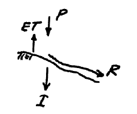
Now we can simply assign the terms to the appropriate parts of the water balance equation and solve for unknown components such as:
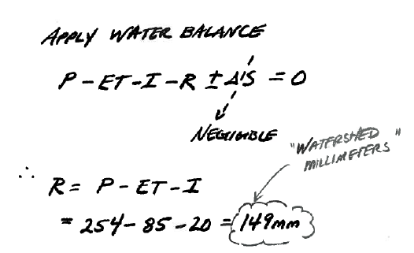
A more formalized approach is:
Problem Statement#
Over 2 months, a 65 km² area near Betws-y-Coed in Wales is expected to receive:
254 mm of precipitation
85 mm of evapotranspiration
20 mm of infiltration
Assume **negligible storage in the catchment.
Determine:
The excess precipitation in cubic meters (\(m^3\))
The excess precipitation in liters
Estimate the sustainable population if daily water demand is 160 liters/person
Known:#
Quantity |
Value |
Units |
|---|---|---|
Area |
65 |
km² |
Precipitation |
254 |
mm |
Evapotranspiration |
85 |
mm |
Infiltration |
20 |
mm |
Storage |
Negligible |
- |
Water demand per person |
160 |
liters/day |
Unknown:#
Quantity |
Value |
Units |
|---|---|---|
Excess Precipitation |
??? |
\(m^3\) |
Excess Precipitation |
??? |
liters |
Sustainable Population |
??? |
people |
Solution:#
Compute Excess Precipitation Depth
\(\text{Excess} = P - ET - I = 254 - 85 - 20 = 149 \, \text{mm}\)Convert to meters:
\(149 \, \text{mm} = 0.149 \, \text{m}\)Convert Area to Square Meters
\(65 \, \text{km}^2 = 65 \times 10^6 = 65,000,000 \, \text{m}^2\)Compute Excess Precipitation Volume in \(m^3\)
\(\text{Volume} = \text{Depth} \times \text{Area} = 0.149 \times 65,000,000 = 9,685,000 \, \text{m}^3\)
Answer (1): 9,685,000 m³
Convert Cubic Meters to Liters
\(1 \, \text{m}^3 = 1,000 \, \text{liters}\)
\(9,685,000 \times 1,000 = 9.685 \times 10^9 \, \text{liters}\)
Answer (2): 9.685 × 10⁹ liters
Estimate Sustainable Population
Assume 2 months ≈ 60 days.
\(\text{Per person use} = 160 \times 60 = 9,600 \, \text{liters/person}\)
\(\text{Sustainable population} = \frac{9.685 \times 10^9}{9,600} \approx 1,008,854\)
Answer (3): Approximately 1,008,854 people
Results#
Quantity |
Value |
Units |
|---|---|---|
Excess Precipitation |
9,685,000 |
\(m^3\) |
Excess Precipitation |
9.685 × 10⁹ |
liters |
Sustainable Population |
1,008,854 |
people |
Screen Capture (Typ. Excel)
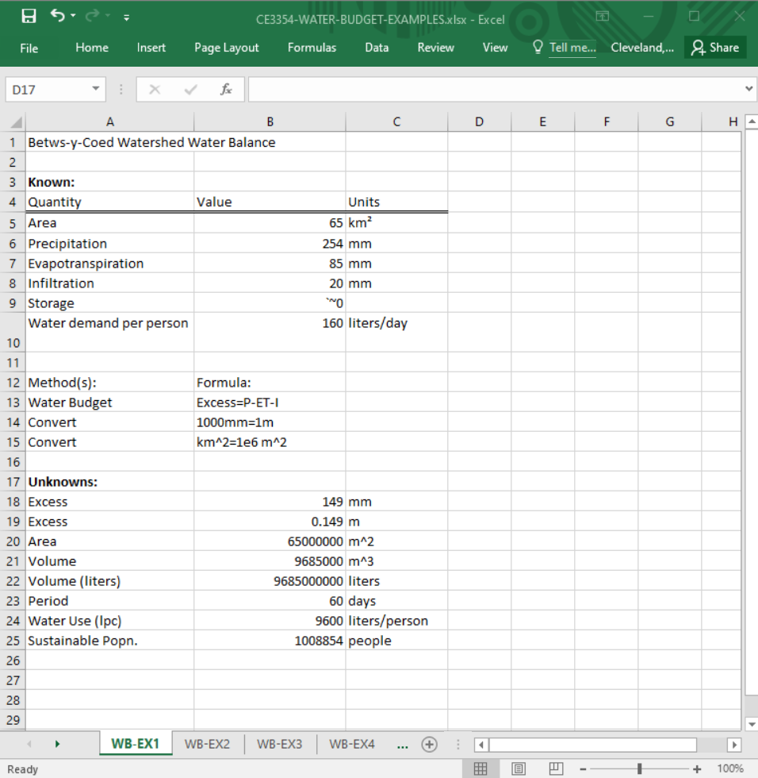
Screen Capture (Formulas in Cells)
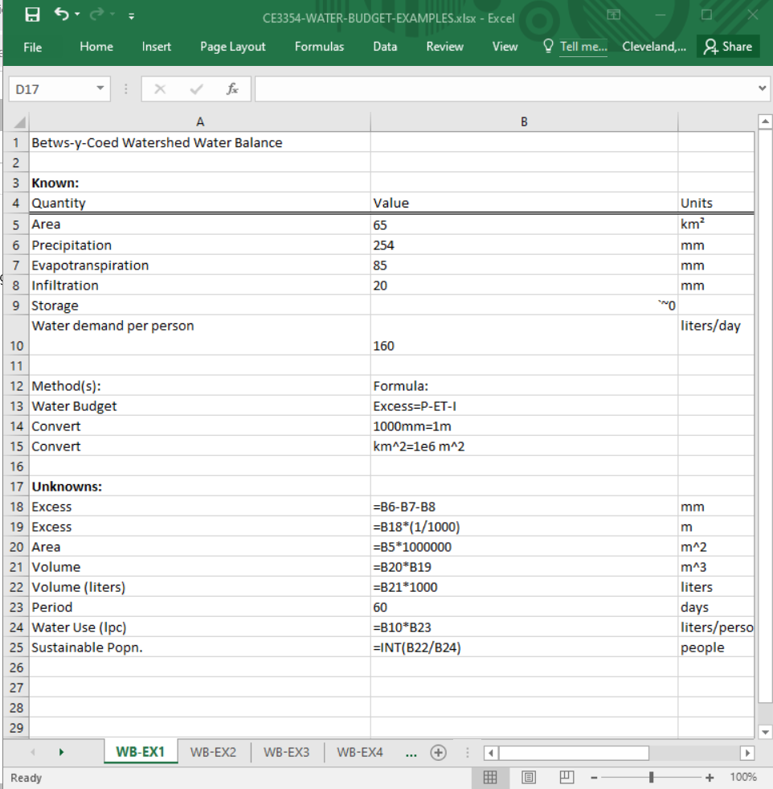#
Water Budget Example 2#
Problem Statement#
At a particular time the storage in a river reach is 55.3 acre-ft. At that instant, the inflow to the reach is 375 cfs and the outflow is 563 cfs. Two hours later, the inflow the inflow to the reach is 600 cfs and the outflow is 675 cfs.
Estimate:
The change in storage over 2 hours.
The reach storage after 2 hours.
Sketch the Situation#

Known:#
Quantity |
Value |
Units |
|---|---|---|
Initial storage |
55.3 |
acre-feet |
Inflow at t₀ |
375 |
cfs |
Outflow at t₀ |
563 |
cfs |
Inflow at t₁ |
600 |
cfs |
Outflow at t₁ |
675 |
cfs |
Time interval |
2 |
hours |
Unknown:#
Quantity |
Value |
Units |
|---|---|---|
\(\Delta\) Storage |
??? |
acre-ft |
Reach Storage at t\(_1\) (2hrs) |
??? |
acre-feet |
Solution:#
Governing Principles:Apply the water balance model:
$\( \frac{dI}{dt} - \frac{dO}{dt} = \frac{dS}{dt} + \frac{dG}{dt}\)$
Analysis: Observe that there is no internal mass generated, so that term will vanish. Discharge is changing over time, so we will have to choose how to cope with that, typically one chooses arithmetic means then substitute into the equation and solve for the storage rate of change
Compute Average Inflow and Outflow
We use arithmetic means:
\(\bar{Q}_{\text{in}} = \frac{375 + 600}{2} = 487.5 \, \text{cfs}\)
\(\bar{Q}_{\text{out}} = \frac{563 + 675}{2} = 619 \, \text{cfs}\)Compute Net Flow Rate
\(\frac{dS}{dt} = \bar{Q}_{\text{in}} - \bar{Q}_{\text{out}} = 487.5 - 619 = -131.5 \, \text{cfs}\)
This is a rate of volume change, negative indicating storage is decreasing.Convert Time to Seconds
\(2 \, \text{hours} = 2 \times 3600 = 7200 \, \text{seconds}\)Compute Change in Storage (cubic feet)
\(\Delta S = -131.5 \, \text{cfs} \times 7200 \, \text{s} = -946,800 \, \text{ft}^3\)Convert to Acre-Feet
\(1 \, \text{acre-ft} = 43,560 \, \text{ft}^3\)
\(\Delta S = \frac{-946,800}{43,560} \approx -21.73 \, \text{acre-ft}\)
Answer (1): Change in storage = –21.73 acre-ft
Compute Final Storage
\(S_{\text{final}} = 55.3 - 21.73 = 33.57 \, \text{acre-ft}\)
Answer (2): Storage after 2 hours = 33.57 acre-ft
Result(s)#
Quantity |
Value |
Units |
|---|---|---|
\(\Delta\) Storage |
-21.73 |
acre-ft |
Reach Storage at t\(_1\) (2hrs) |
33.57 |
acre-feet |
Screen Capture (Typ. Excel)
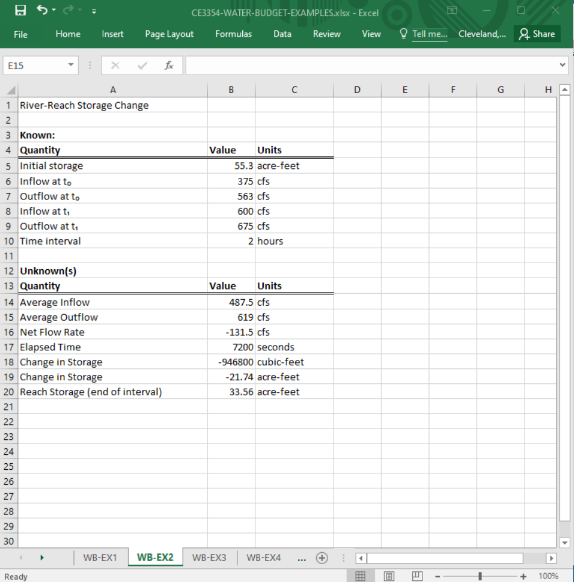
Screen Capture (Formulas in Cells)
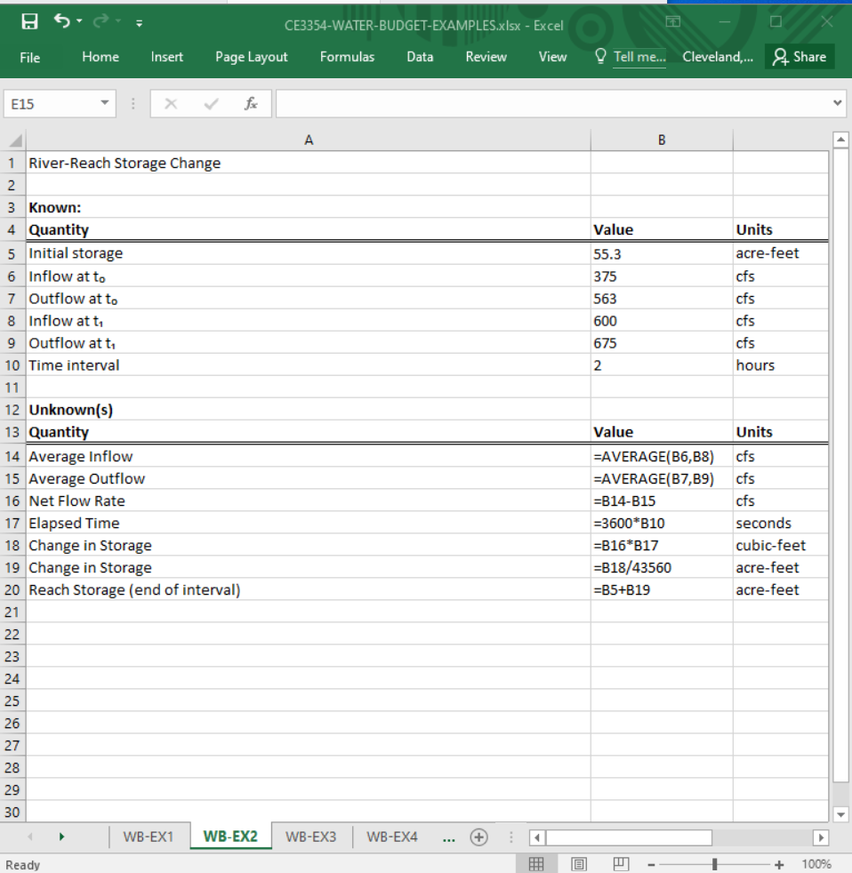
Water Budget Example 3#
Problem Statement#
A farm has a reservoir with vertical sides and a surface area of 2.5 acres. At the start of the dry season, the reservoir contains 9.84 feet of water depth.
During the dry season:
The reservoir loses 2.5 inches of water per week due to evaporation.
The average irrigation demand is 0.23 acre-feet per day.
Determine:
how many weeks the farm can supply irrigation water from the reservoir before it is depleted.
Known:#
Quantity |
Value |
Units |
|---|---|---|
Reservoir surface area |
2.5 |
acres |
Initial water depth |
9.84 |
feet |
Evaporation loss rate |
2.5 |
inches/week |
Irrigation demand |
0.23 |
acre-ft/day |
Unknown:#
Quantity |
Value |
Units |
|---|---|---|
Time to Depletion |
??? |
weeks |
Solution:#
Compute Total Initial Volume in the Reservoir
\(\text{Total Volume} = \text{Depth} \times \text{Surface Area}\)
\(\text{Total Volume} = 9.84 \, \text{ft} \times 2.5 \, \text{acres} = 24.6 \, \text{acre-ft}\)Convert Weekly Evaporation to Volume Loss
\(2.5 \, \text{in} = \frac{2.5}{12} = 0.2083 \, \text{ft}\)
\(\text{Evaporation Volume per Week} = 0.2083 \, \text{ft} \times 2.5 \, \text{acres} = 0.5208 \, \text{acre-ft/week}\)Compute Weekly Irrigation Demand
\(\text{Irrigation Volume per Week} = 0.23 \, \text{acre-ft/day} \times 7 = 1.61 \, \text{acre-ft/week}\)Compute Total Weekly Loss
\(\text{Total Weekly Loss} = 0.5208 + 1.61 = 2.1308 \, \text{acre-ft/week}\)Compute Maximum Number of Weeks
\(\text{Number of Weeks} = \frac{24.6}{2.1308} \approx 11.55\)
Result(s):#
Quantity |
Value |
Units |
|---|---|---|
Time to Depletion |
11.55 |
weeks |
The farm can irrigate for approximately \(11\frac{1}{2}\) weeks.
Screen Capture (Typ. Excel)
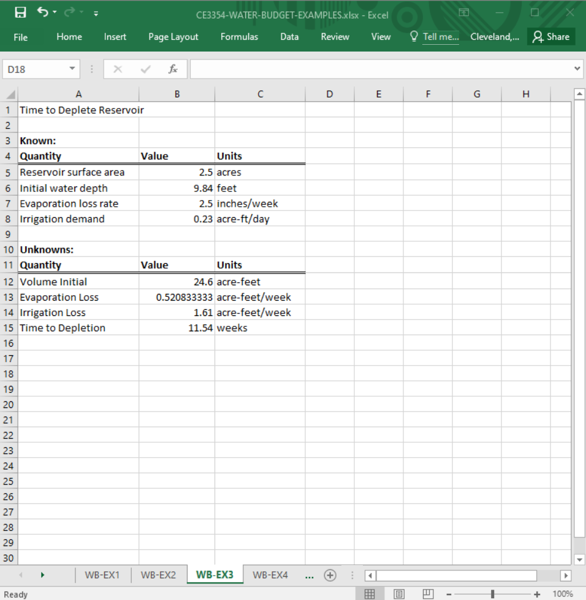
Screen Capture (Formulas in Cells)
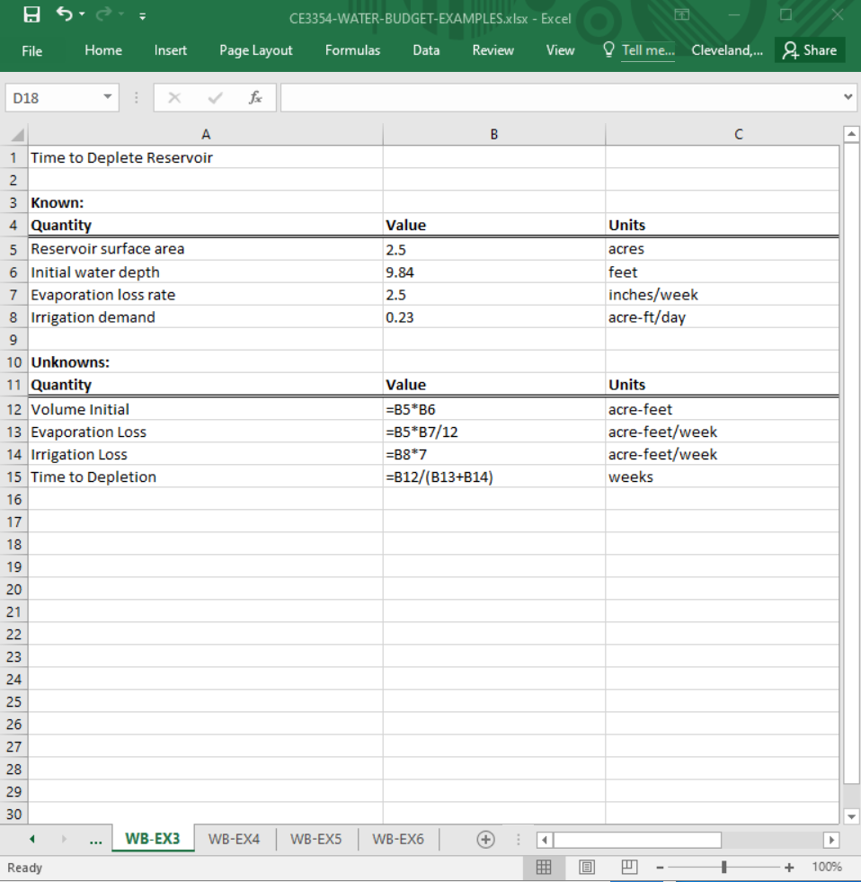
Water Budget Example 4#
Problem Statement#
The mean annual precipitation for a 132 square-mile watershed is 25 inches.
Assume that 20-percent of the precipitation reaches the outlet as streamflow.
Determine the mean streamflow rate in:
Acre-feet per year
Cubic feet per second (cfs)
Cubic meters per second (cms)
Known:#
Quantity |
Value |
Units |
|---|---|---|
Watershed area |
132 |
square miles |
Mean annual precipitation |
25 |
inches/year |
Runoff coefficient |
0.20 |
- |
Unknown:#
Quantity |
Value |
Units |
|---|---|---|
Mean streamflow rate |
??? |
Acre-ft/year |
Mean streamflow rate |
??? |
cfs |
Mean streamflow rate |
??? |
cms |
Solution#
Convert Area
\(132 \times 640 = 84,480 \, \text{acres}\)Convert Precipitation
\(25 \, \text{in} = 2.0833 \, \text{ft}\)Total Volume
\(84,480 \times 2.0833 = 175,919.184 \, \text{acre-ft/year}\)Streamflow Volume
\(0.20 \times 175,919.184 = 35,183.837 \, \text{acre-ft/year}\)
Answer (a): 35,184 acre-ft/year
Convert to cfs
\(\frac{35,183.837 \times 43,560}{31,536,000} \approx 48.6 \, \text{cfs}\)
Answer (b): 48.6 cfs
Convert to cms
\(48.6 \times 0.0283168 = 1.377\)
Answer (c): 1.38 cms
Result(s)#
Quantity |
Value |
Units |
|---|---|---|
Mean streamflow rate |
35,184 |
Acre-ft/year |
Mean streamflow rate |
48.6 |
cfs |
Mean streamflow rate |
1.38 |
cms |
Screen Capture (Typ. Excel)
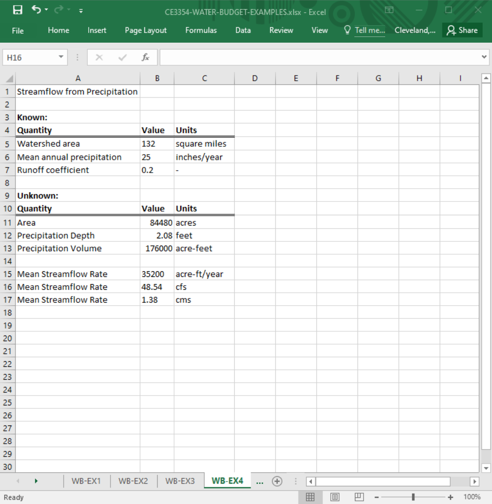
Screen Capture (Formulas in Cells)
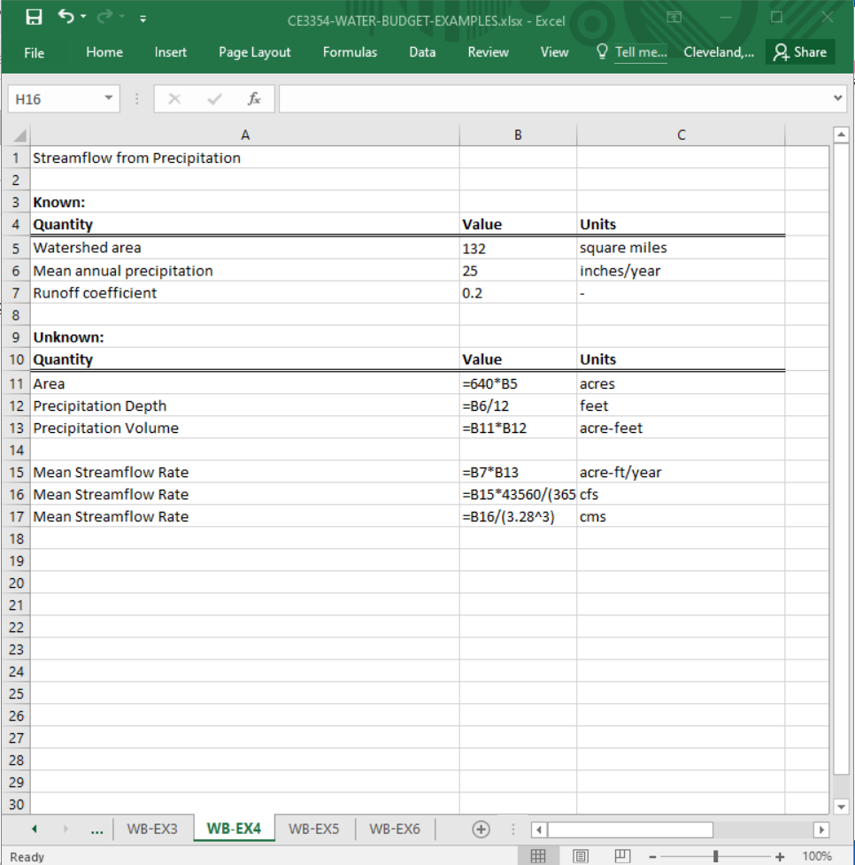
Water Budget Example 5#
Problem Statement#
A 280 km² watershed receives 725 mm of rain annually.
Determine the mean annual rainfall volume in:
Cubic meters
Cubic feet
Gallons
Acre-feet
Known:#
Quantity |
Value |
Units |
|---|---|---|
Watershed area |
280 |
km\(^2\) |
Mean annual precipitation |
725 |
mm |
Unknown:#
Quantity |
Value |
Units |
|---|---|---|
Rainfall Volume |
??? |
m\(^3\) |
Rainfall Volume |
??? |
ft\(^3\) |
Rainfall Volume |
??? |
gallons (US) |
Rainfall Volume |
??? |
acre-ft |
Solution:#
Convert Units
Area: \(280 \times 10^6 = 280,000,000 \, \text{m}^2\)
Rainfall: \(725 \text{ mm} = 0.725 \, \text{m}\)Compute Volume
\(0.725 \times 280,000,000 = 203,000,000 \, \text{m}^3\)
Answer:
(1) 203,000,000 m³
Convert to Other Units
Cubic feet: \(203,000,000 \times 35.3147 = 7.17 \times 10^9\)
Gallons: \(203,000,000 \times 264.172 = 5.31 \times 10^{10}\)
Acre-feet: \(\frac{203,000,000}{1233.48} = 164,541\)
Answer(s):
(2) 7.17 × 10⁹ ft³
(3) 5.31 × 10¹⁰ gallons
(4) 164,541 acre-feet
Results#
Quantity |
Value |
Units |
|---|---|---|
Rainfall Volume |
\(203,000,000\) |
m\(^3\) |
Rainfall Volume |
\(7.17 \times 10^9\) |
ft\(^3\) |
Rainfall Volume |
\(5.31 \times 10^{10}\) |
gallons (US) |
Rainfall Volume |
\(164,541\) |
acre-ft |
Screen Capture (Typ. Excel)
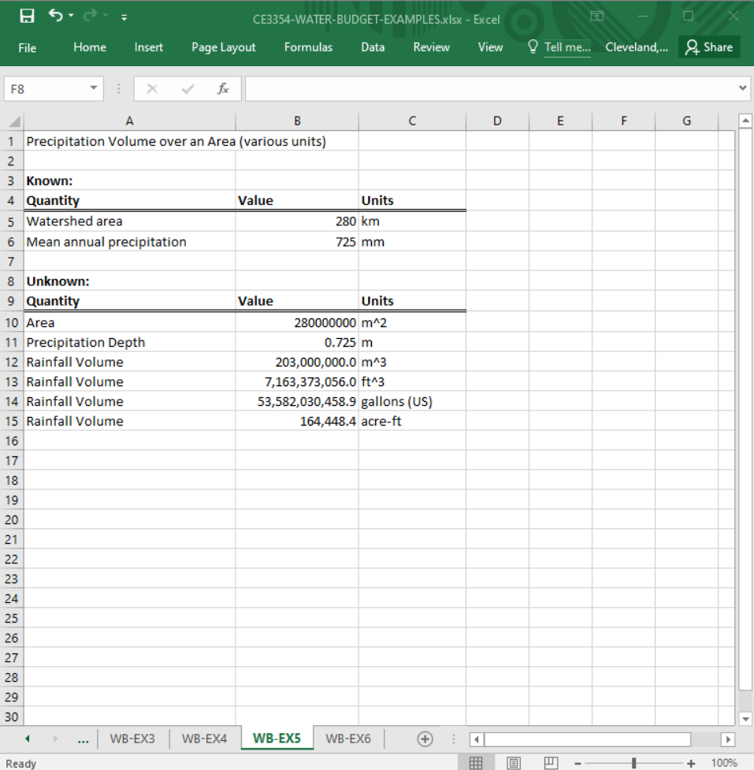
Screen Capture (Formulas in Cells)
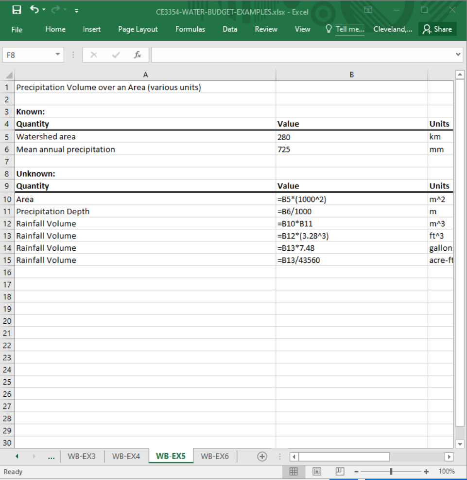
Water Budget Example 6#
Problem Statement#
A 600-hectare** farm receives 2500 mm of rainfall annually.
A river enters at 5 m³/s** and exits at 4 m³/s.
Storage increases by 2.5 × 10⁶ m³ annually.
Determine:
An estimate of annual evapotranspiration in mm using the water budget.
Known:#
Quantity |
Value |
Units |
|---|---|---|
Watershed area |
600 |
hectares |
Mean annual precipitation |
2500 |
mm |
River Inflow |
5 |
\(m^3/s\) |
River Outflow |
4 |
\(m^3/s\) |
Annual \(\Delta\) Storage |
\(2.5 \times 10^{6}\) |
\(m^3\) |
Unknown:#
Quantity |
Value |
Units |
|---|---|---|
Mean annual evapotranspiration |
??? |
mm |
Solution:#
Convert Area and Rainfall
\(600 \times 10,000 = 6,000,000 \, \text{m}^2\)
\(2500 \, \text{mm} = 2.5 \, \text{m}\)
Rainfall volume = \(2.5 \times 6,000,000 = 15,000,000 \, \text{m}^3\)River Inflow – Outflow (Net)
Net inflow = \(1 \, \text{m}^3/s\)
Annual = \(1 \times 31,536,000 = 31,536,000 \, \text{m}^3\)Apply Water Budget
Evaporation = \((15,000,000 + 31,536,000) - 2,500,000 = 44,036,000 \, \text{m}^3\)Convert to Depth
\(\frac{44,036,000}{6,000,000} = 7.339 \, \text{m} = 7339 \, \text{mm}\)
Answer:
7339 mm of evaporation per year
Result(s):#
Quantity |
Value |
Units |
|---|---|---|
Mean annual evapotranspiration |
7339 |
mm |
Screen Capture (Typ. Excel)
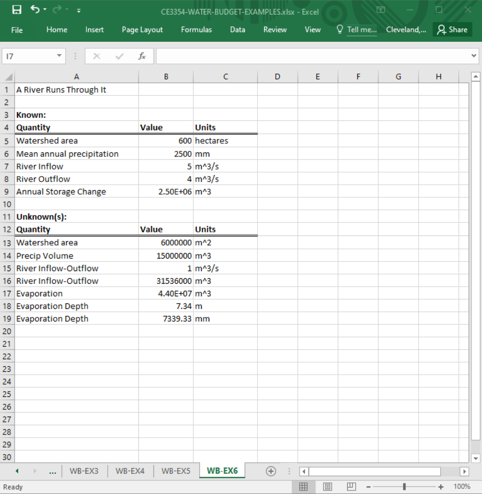
Screen Capture (Formulas in Cells)
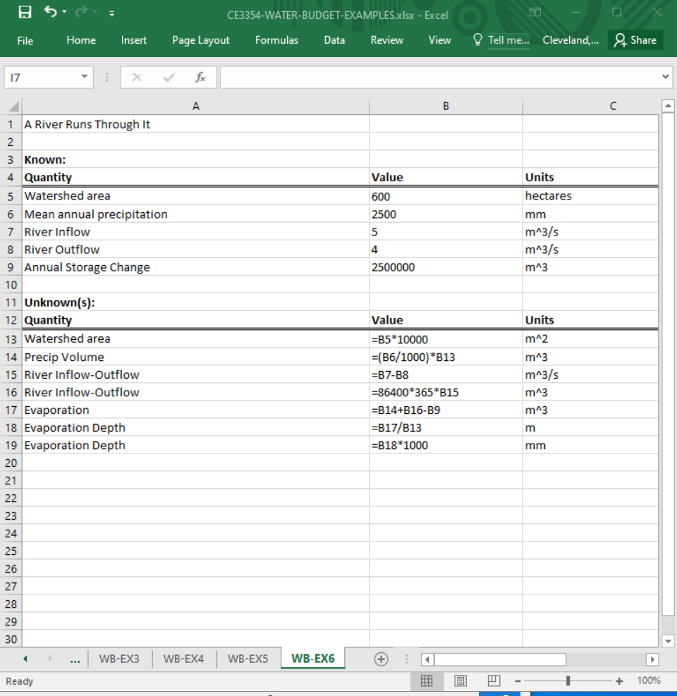
Exercises#
ce3354-es1-2025-2.pdf Volume units; Water budget application(s)